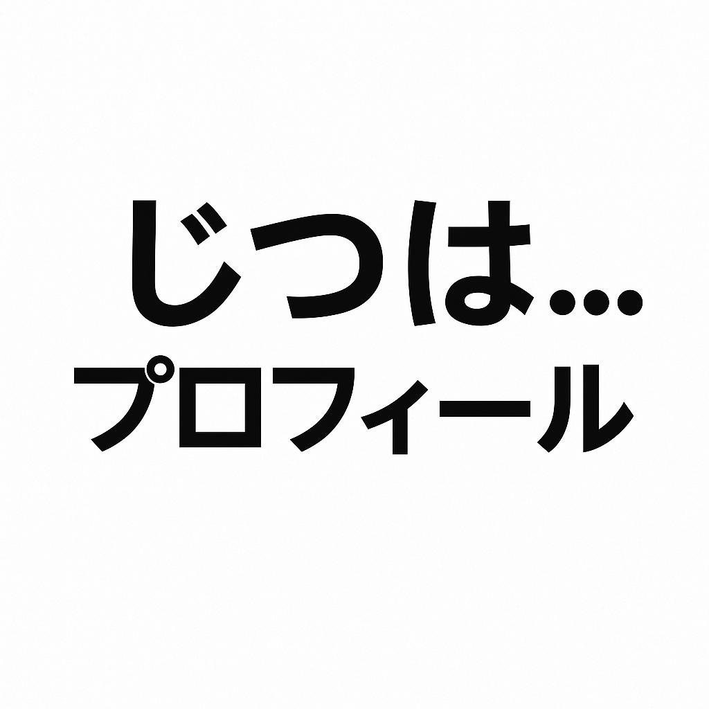

あなたの“じつは…”を一言で入力するだけで、ちょっと毒舌なAIが裏プロフィールを作ってくれます。
Q1. やめたいけど、ついやっちゃうことは？（一言で）
Q2. 他人から見たら“え？”って思われそうなマイルールは？（一言で）
Q3. 思い返すと今でもちょっと恥ずかしい黒歴史は？（一言で）
Q4. こっそり誇ってる、自分の変な才能は？（一言で）
Q5. なぜか未だに苦手なもの・ことは？（一言で）
こっそり告白
Xでシェアする
共有メニューを開く
LINEでシェア
Slackでシェア
Discordでシェア
URLをコピー
✅ 結果はこちら：
ここに結果が表示されます。